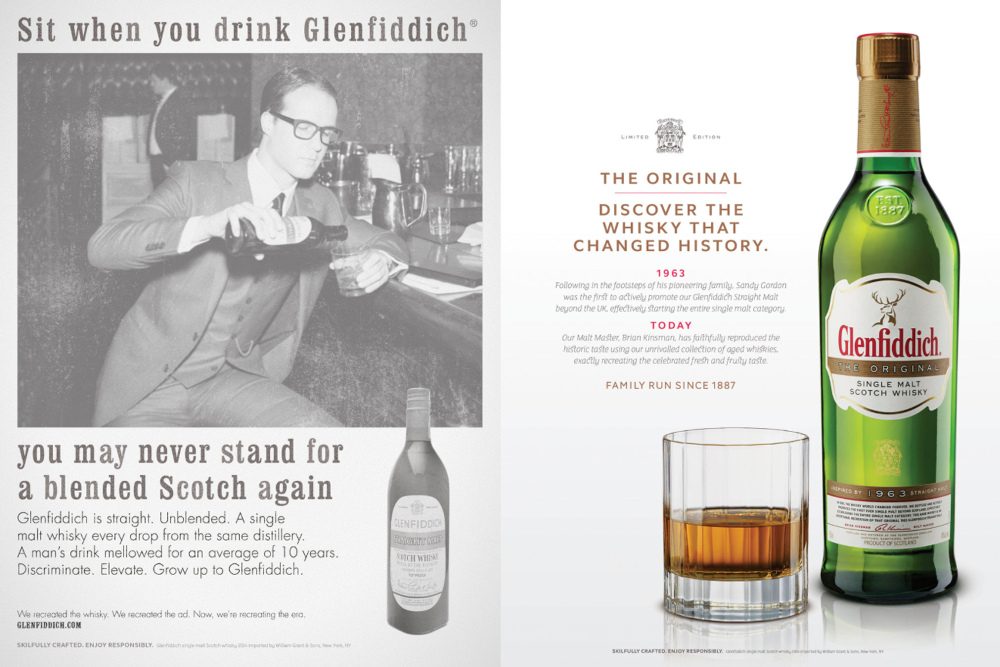
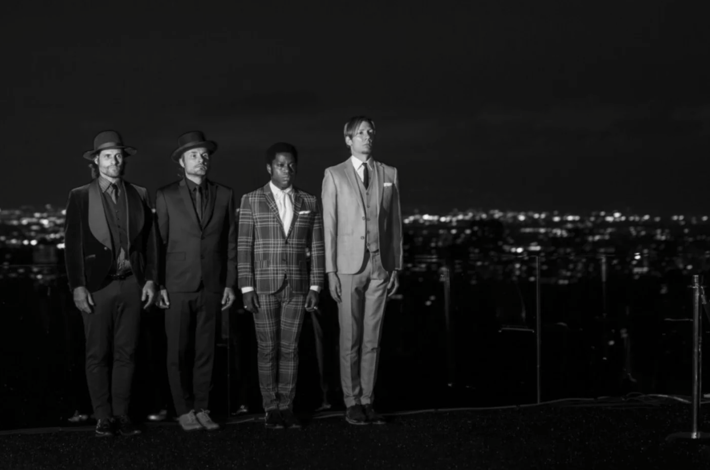

PORTAL INTO 1963
Creative Director
Momentum Worldwide
Cannes Case Study
"A Whisky Campaign
for Those Who Want to Drink Like Don Draper"

Print Ad — Double Page Spread

THE CHALLENGE
Glenfiddich was launching "The Original" — a limited-edition single malt based on the 1963 recipe that first introduced America to single malt Scotch. But 50 years later, whisky drinkers had no shortage of newer, shinier options. How do you make a heritage product feel urgent?
THE INSIGHT
Mad Men was in its final season. Brown spirits were surging. Consumers ages 21-34 were ordering fewer vodka sodas and more Old Fashioneds. The timing was right — but nostalgia alone wouldn't cut it. We needed to make 1963 feel real.
THE WORK
We built physical portals to 1963 in New York and Los Angeles. A mansion on the Upper East Side. The Sheats-Goldstein Residence — John Lautner's mid-century masterpiece from The Big Lebowski. Period-accurate sets. Vintage Trouble performing live. Editorial fashion shoots. The original 1963 ad — recreated. And a double-page spread that brought the campaign to print.
THE IMPACT
Featured in The New York Times. A $1 million campaign with digital, social, PR, and events in two cities. And a template for the nostalgia marketing wave that would crest in the years to follow.